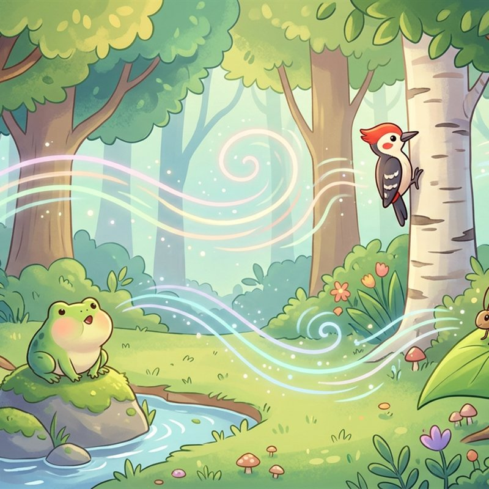

استمع إلى الضفدع ونقار الخشب والصرصور، وخمّن صوت من تسمع
0:00
5:00
توقفت عند الدقيقة 0:00

 35 د
35 د

استمع إلى الضفدع ونقار الخشب والصرصور، وخمّن صوت من تسمع
توقفت عند الدقيقة 0:00

استمعت إلى «أصوات الغابة» كلها
 +20 نقطة
+20 نقطة
حفظنا مكانك عند الدقيقة 0:00، وتكمل من هنا في المرة القادمة